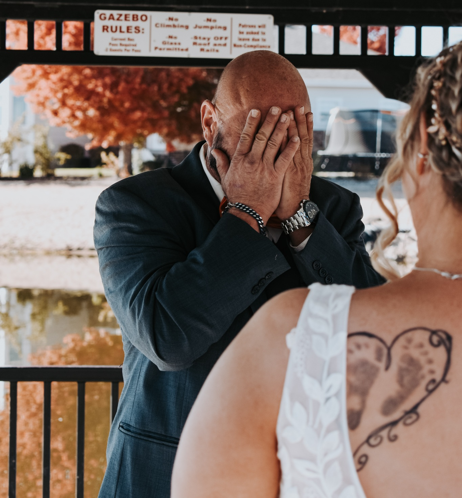

Capturing moments that last a lifetime.
I specializes in timeless, heartfelt images for families, weddings, and food photography.
Giving Back to Our Community
I am honored to offer volunteer photography services for children in foster care, creating meaningful portraits that celebrate their story, dignity, and individuality. Learn more about this special work and how to get in touch for additional information.
